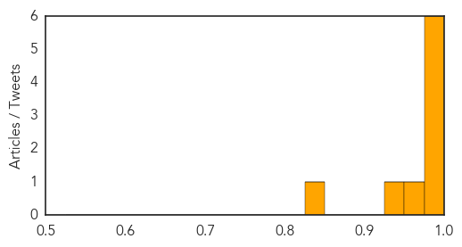

Chikungunya
30-Day Web Trend
2 alerts, 0 warnings

30-Day Twitter Trend
0 alerts, 0 warnings

Article Locations

Article Confidences
Top Articles:
- 0.999
- Mosquito virus contracted by 3 LIers while traveling abroad
- 0.999
- Chikungunya Cases Hit nearly 200 in Puerto Rico, 2 in Florida — Naharnet
- 0.999
- Debilitating case of mosquito-borne chikungunya reported in U.S.
- 0.996
- The painful, mosquito-borne chikungunya virus has reached the US
- 0.992
- Tennessee counts more chikungunya cases
- 0.979
- Maryland health officials warn against West Nile, new virus
- 0.974
- Health Ministry heightens chikungunya response
- 0.938
- ADPH confirms 3 cases of chikungunya in Alabama
- 0.844
- 1st U.S. chikungunya-virus infections
Top Tweets:
-
No tweets found for Jul 19, 2014
West Nile Virus
30-Day Web Trend
6 alerts, 9 warnings

30-Day Twitter Trend
0 alerts, 0 warnings

Article Locations

Article Confidences

Top Articles:
Top Tweets:
-
No tweets found for Jul 19, 2014